Institutional Status
Author: Takin.solutions Ltd.
Version: 1.0
Institutional Status
A legally binding institutional fact regarding a group's institutional status, described in terms of the concrete circumstances of its ascription, including the actors involved, the type of social status held, timespan, etc.
| Name | URI | |
|---|---|---|
| Root Ontology Node | ZE32 Institutional Status | http://takin.solutions/cidoc_crm/crmaaa/ZE32_Institutional_Status/version-0.9.4 |
| Type Differentiator | N/A | N/A |
| Filed ID | Name | Description | Data Type | CRM Path |
|---|---|---|---|---|
| DHIF.152 | Group Ascribed Institutional Status | This field is used to link the documented institutional status to the group who has been ascribed that institutional status. | Reference Model [DHIM.2_Group] | ->ZP71->E39[DHIF.152_1] |
| DHIF.153 | Institutional Status Ascribed | This field is used to link the documented institutional status to the type of institutional status that is ascribed. | Concept | ->ZP72->E55[DHIF.153_1] |
| DHIF.154 | Relation Holding in Institutional Status Ascription | This field is used to link the documented institutional status to the relation that ascribes the institutional status to the group. | Concept | ->ZP73->E55[DHIF.154_1] |
| LAF.6 | Name Content | This field is used to record the string value of the name attributed to the institutional fact. | String | ->p1->E33_E41[4_1]->p190->rdf:literal |
| LAF.5 | Name Type | This field is used to record the type of the name attributed to the documented institutional fact. | Concept | ->p1->E33_41[4_1]->p2->E55[5_1] |
| LAF.7 | Name Language | This field is used to record the language of the name attributed to the documented institutional fact. | Concept | ->p1->E33_E41[4_1]->p72->E56[7_1] |
| LAF.44 | Name Source Reference | This field is used to link to a source text in which the name denoting the documented institutional fact is used. | Reference Model [DHIM.5_Legal_Document] | ->p1->E33_E41[4_1]->p67i->E33[44_1] |
| LAF.15 | Statement Content | This field is used to record the actual textual content of the statement describing the documented institutional fact. | String | ->p67i->E33[13_1]->p190->rdf:literal |
| LAF.14 | Statement Type | This field is used to record the formal type of the statement made about the documented institutional fact. | Concept | ->p67i->E33[13_1]->p2->E55[14_1] |
| LAF.16 | Statement Language | This field is used to record the language of the statement describing the documented institutional fact. | Concept | ->p67i->E33[13_1]->p72->E56[16_1] |
| LAF.55 | Statement Source Reference | This field is used to link to a source text from which the statement describing the documented entity is institutional fact. | Reference Model [DHIM.5_Legal_Document] | ->p67i->E33[13_1]->p67i->E33[55_1] |
| LAF.10 | Identifier Content | This field is used to record an identifier attributed to the documented institutional fact. | String | ->p1->E42[8_1]->p190->rdf:literal |
| LAF.9 | Identifier Type | This field is used to record the type of the identifier attributed to the documented institutional fact. | Concept | ->p1->E42[8_1]->p2->E55[9_1] |
| LAF.25 | Begin of the Begin | This field is used to record the earliest possible start date for the timespan of the documented institutional fact. | Date | ->p4->E52[22_1]->p82a->xsl:date |
| LAF.23 | End of the Begin | This field is used to record the latest possible start date for the timespan of the documented institutional fact. | Date | ->p4->E52[22_1]->p81a->xsl:date |
| LAF.24 | Begin of the End | This field is used to record the earliest possible end date for the timespan of the documented institutional fact. | Date | ->p4->E52[22_1]->p81b->xsl:date |
| LAF.26 | End of the End | This field is used to record the latest possible end date for the timespan of the documented institutional fact. | Date | ->p4->E52[22_1]->p82b->xsl:date |
| LAF.39 | Source Reference Work | This field is used to link the documented institutional fact to an instance of textual work which references it. | Reference Model [DHIM.5_Legal_Document] | ->p67i->E33[39_1] |
| PIRF.426 | Digital Reference | This field is used to link the documented institutional fact to a digital object, expressed as a uri, which describes it. | uri | ->P67i->D1[426_1] |
| PIRF.427 | Digital Reference Type | This field is used to indicate the type of a a digital object, expressed as a uri, which describes the documented institutional fact. | Concept | ->P67i->D1[426_1]->P2->E55[427_1] |
- Institutional Status Ontology Graph
[to view the image right click 'open image in a new tab'] 
- Institutional Status RDF
@prefix crm: <http://www.cidoc-crm.org/cidoc-crm/> .
@prefix crmaaa: <https://takin.solutions/ontologies/crmaaa/> .
@prefix rdfs: <http://www.w3.org/2000/01/rdf-schema#> .
<https://linked.art/example/models/institutional_fact> a crmaaa:ZE32_Institutional_Status ;
crm:P1_is_identified_by <https://linked.art/example/conceptual_object/4_1>,
<https://linked.art/example/conceptual_object/8_1> ;
crm:P4_has_time-span <https://linked.art/example/time_span/22_1> ;
crm:P67i_is_referred_to_by <https://linked.art/example/conceptual_object/13_1>,
<https://linked.art/example/conceptual_object/39_1>,
<https://linked.art/example/conceptual_object/426_1> ;
crmaaa:ZP71_has_institutional_status_subject <https://linked.art/example/actor/DHIF.152_1> ;
crmaaa:ZP72_ascribes_Institutional_status <https://linked.art/example/type/DHIF.153_1> ;
crmaaa:ZP73_ascribes_institutional_status_relation <https://linked.art/example/type/DHIF.154_1> .
<http://vocab.getty.edu/aat/300418049> a crm:E55_Type .
<http://vocab.getty.edu/page/aat/300404670> a crm:E55_Type ;
rdfs:label "preferred terms" .
<https://linked.art/example/actor/DHIF.152_1> a crm:E74_Group .
<https://linked.art/example/conceptual_object/13_1> a crm:E33_Linguistic_Object ;
crm:P190_has_symbolic_content "Statement_string_content" ;
crm:P2_has_type <https://linked.art/example/type/14_1> ;
crm:P67i_is_referred_to_by <https://linked.art/example/statement/55_1> ;
crm:P72_has_language <https://linked.art/example/type/16_1> .
<https://linked.art/example/conceptual_object/39_1> a crm:E33_Linguistic_Object .
<https://linked.art/example/conceptual_object/426_1> a crm:D1_Digital_Object ;
crm:P2_has_type <https://linked.art/example/type/427_1> .
<https://linked.art/example/conceptual_object/4_1> a crm:E33_E41_Linguistic_Appellation ;
crm:P190_has_symbolic_content "Name_string_value" ;
crm:P2_has_type <http://vocab.getty.edu/page/aat/300404670> ;
crm:P67i_is_referred_to_by <https://linked.art/example/textual_object/44_1> ;
crm:P72_has_language <https://linked.art/example/type/7_1> .
<https://linked.art/example/conceptual_object/8_1> a crm:E42_Identifier ;
crm:P190_has_symbolic_content "Identifier_value_content" ;
crm:P2_has_type <https://linked.art/example/identifier/9_1> .
<https://linked.art/example/identifier/9_1> a crm:E55_Type .
<https://linked.art/example/statement/55_1> a crm:E33_Linguistic_Object .
<https://linked.art/example/textual_object/44_1> a crm:E33_Linguistic_Object .
<https://linked.art/example/time_span/22_1> a crm:E52_Time-Span ;
crm:P81a_end_of_the_begin "2000-01-01T09:00:00" ;
crm:P81b_begin_of_the_end "2000-01-01T09:00:00" ;
crm:P82a_begin_of_the_begin "2000-01-01T09:00:00" ;
crm:P82b_end_of_the_end "2000-01-01T09:00:00" .
<https://linked.art/example/type/14_1> a crm:E55_Type ;
crm:P2_has_type <http://vocab.getty.edu/aat/300418049> .
<https://linked.art/example/type/16_1> a crm:E56_Language .
<https://linked.art/example/type/427_1> a crm:E55_Type .
<https://linked.art/example/type/7_1> a crm:E56_Language .
<https://linked.art/example/type/DHIF.153_1> a crm:E55_Type .
<https://linked.art/example/type/DHIF.154_1> a crm:E55_Type .
- JOSN-LD
{
"@context": "https://linked.art/ns/v1/linked-art.json",
"@graph": [
{
"classified_as": [
"http://vocab.getty.edu/page/aat/300404670"
],
"content": "Name_string_value",
"id": "https://linked.art/example/conceptual_object/4_1",
"language": [
"https://linked.art/example/type/7_1"
],
"referred_to_by": [
"https://linked.art/example/textual_object/44_1"
],
"type": "Name"
},
{
"crm:P81a_end_of_the_begin": "2000-01-01T09:00:00",
"crm:P81b_begin_of_the_end": "2000-01-01T09:00:00",
"crm:P82a_begin_of_the_begin": "2000-01-01T09:00:00",
"crm:P82b_end_of_the_end": "2000-01-01T09:00:00",
"id": "https://linked.art/example/time_span/22_1",
"type": "TimeSpan"
},
{
"id": "https://linked.art/example/type/7_1",
"type": "Language"
},
{
"classified_as": [
"https://linked.art/example/type/14_1"
],
"content": "Statement_string_content",
"id": "https://linked.art/example/conceptual_object/13_1",
"language": [
"https://linked.art/example/type/16_1"
],
"referred_to_by": [
"https://linked.art/example/statement/55_1"
],
"type": "LinguisticObject"
},
{
"id": "https://linked.art/example/textual_object/44_1",
"type": "LinguisticObject"
},
{
"id": "https://linked.art/example/identifier/9_1",
"type": "Type"
},
{
"id": "https://linked.art/example/statement/55_1",
"type": "LinguisticObject"
},
{
"id": "https://linked.art/example/type/16_1",
"type": "Language"
},
{
"classified_as": [
"https://linked.art/example/type/427_1"
],
"id": "https://linked.art/example/conceptual_object/426_1",
"type": "crm:D1_Digital_Object"
},
{
"_label": "preferred terms",
"id": "http://vocab.getty.edu/page/aat/300404670",
"type": "Type"
},
{
"id": "https://linked.art/example/type/DHIF.153_1",
"type": "Type"
},
{
"id": "https://linked.art/example/conceptual_object/39_1",
"type": "LinguisticObject"
},
{
"id": "https://linked.art/example/actor/DHIF.152_1",
"type": "Group"
},
{
"id": "http://vocab.getty.edu/aat/300418049",
"type": "Type"
},
{
"id": "https://linked.art/example/type/DHIF.154_1",
"type": "Type"
},
{
"https://takin.solutions/ontologies/crmaaa/ZP71_has_institutional_status_subject": {
"id": "https://linked.art/example/actor/DHIF.152_1"
},
"https://takin.solutions/ontologies/crmaaa/ZP72_ascribes_Institutional_status": {
"id": "https://linked.art/example/type/DHIF.153_1"
},
"https://takin.solutions/ontologies/crmaaa/ZP73_ascribes_institutional_status_relation": {
"id": "https://linked.art/example/type/DHIF.154_1"
},
"id": "https://linked.art/example/models/institutional_fact",
"identified_by": [
"https://linked.art/example/conceptual_object/8_1",
"https://linked.art/example/conceptual_object/4_1"
],
"referred_to_by": [
"https://linked.art/example/conceptual_object/39_1",
"https://linked.art/example/conceptual_object/13_1",
"https://linked.art/example/conceptual_object/426_1"
],
"timespan": "https://linked.art/example/time_span/22_1",
"type": "https://takin.solutions/ontologies/crmaaa/ZE32_Institutional_Status"
},
{
"id": "https://linked.art/example/type/427_1",
"type": "Type"
},
{
"classified_as": [
"https://linked.art/example/identifier/9_1"
],
"content": "Identifier_value_content",
"id": "https://linked.art/example/conceptual_object/8_1",
"type": "Identifier"
},
{
"classified_as": [
"http://vocab.getty.edu/aat/300418049"
],
"id": "https://linked.art/example/type/14_1",
"type": "Type"
}
]
}